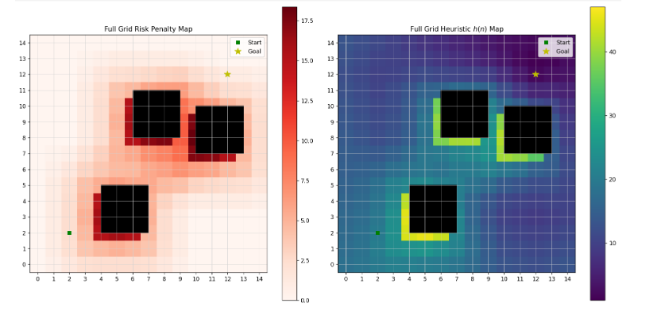
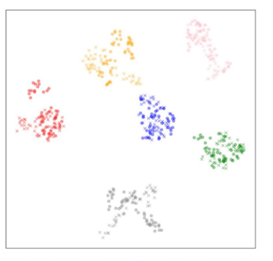

Jatin Kumar Arora
Safe Autonomy • Robotics
About
Publications
Articles
Education
Experience
CV
☾ / ☀
Publications
Peer-reviewed journal articles and preprints
2025

Unified Path Planner with Adaptive Safety and Optimality
Jatin Kumar Arora
, Soutrik Bandyopadhyay, Shubhendu Bhasin
arXiv preprint, 2025
arXiv
•
PDF
2023

Low-Frequency Adaptation Deep Neural Network-Based Domain Adaptation Approach for Shaft Imbalance Fault Diagnosis
Jatin Kumar Arora
, Sudhar Rajagopalan, Jaskaran Singh, Ashish Purohit
Journal of Vibration Engineering & Technologies (Springer), 2023
Springer